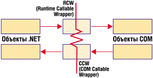

Андрей Колесов
Выпустив в ноябре 2000 г. бета-версию Visual Studio .NET, корпорация Microsoft публично показала, как она собирается реализовывать на технологическом уровне свою новую архитектуру .NET, которая до того представлялась на уровне довольно общих концепций. Вполне естественно, что реакция общественности была двойственной - наряду с одобрением имела место и критика.
Особенно бурно новшества .NET обсуждались в сообществе VB-программистов. Представленный вариант VB.NET не оставил сомнений в том, что переход на новую версию VB будет достаточно сложным и болезненным. Впервые за десять лет существования VB нарушилась совместимость программного кода "снизу вверх", что делает автоматический перенос приложений из VB 6.0 в VB.NET по крайней мере очень проблематичным. Кроме того, и это наиболее существенно, изменилась логика и концепции разработки (см. также статью "В ожидании Visual Studio .NET", "BYTE/Россия" № 1/2001).
Казалось бы, в Microsoft VB.NET наконец-то было выполнено давнишнее требование VB-программистов - максимально приблизить их инструмент к возможностям "настоящих" языков программирования, таких, как C/C++, в частности, убрав многочисленные ограничения и реализовав полноценный режим объектно-ориентированного программирования. Но, как это часто бывает в жизни, у медали обнаружилась и оборотная сторона, а достоинствам сопутствовали серьезные недостатки. Прежде всего для освоения обновленного инструмента требуются немалые усилия. Проблема усугубляется еще и тем, что огромная (насчитывающая по разным оценкам от 2 до 4 млн) армия VB-программистов очень неоднородна по квалификации и характеру решаемых задач. Именно это обусловило раскол VB-сообщества на две части по отношению к новому инструменту. Сторонники VB.NET подчеркивают, что новый VB дает возможность создавать приложения масштаба предприятия, в том числе Web- и серверные приложения. Противники говорили о серьезной угрозе стабильности огромной базы существующего VB-кода и значительных затратах на переобучение программистов.
Участники дискуссии руководствовались чисто практическими интересами - все понимали, что реализация новшеств VB.NET может серьезно повлиять на их личную судьбу. Ведь переход от нынешней архитектуры Windows к будущей .NET может оказаться таким же болезненным, как и переход от DOS к Windows в начале 1990-х.
Появление в июне 2001 года Visual Studio .NET Beta 2 подвело черту под жаркими дискуссиями - стало очевидно, что Microsoft не собирается идти на сколько-нибудь радикальные уступки в ответ на критику нововведений VB.NET (правда, и раньше иллюзии по этому поводу были только у людей, слабо знакомых с бизнес-стратегией детища Билла Гейтса). Именно тогда VB-разработчики должны были всерьез задуматься над вопросом - как жить дальше?
В поисках ответа на этот вопрос мы в прошлом году опубликовали цикл статьей "А ты готов к VB.NET? Советы тем, кто собирается работать с новой версий VB" ("BYTE/Россия" № 3, 6 и 8/2001). Сейчас, спустя год, мы подводим итог этого обсуждения, причем в новых исторических условиях - VB 6.0 больше не продается и не поддерживается, на смену ему пришел...
Поспешай не торопясь
Сформулируем основной принцип миграции: она должна выполняться постепенно, без спешки и суеты, но в то же время достаточно уверенно - важно не упустить время. Повторим еще раз: переход от Windows к .NET произойдет совсем не мгновенно, скорее всего, переломный момент наступит через пару лет (об этом говорят простой ретроспективный анализ и здравый смысл, такие же оценки дают и ведущие аналитические агентства). Сейчас архитектура .NET проходит фактически стадию опытной эксплуатации, по итогам которой ее концепция и конкретные решения могут быть подвергнуты определенной коррекции. Об устоявшемся ее варианте можно будет говорить после появления версии .NET Framework 2.0 (а еще лучше - 3.0).
Последовательность перехода на новые инструменты для разных категорий разработчиков обычно выглядит следующим образом.
На этапе бета-тестирования сам поставщик технологии и его ближайшие партнеры выпускают образцово-показательные приложения в маркетинговых целях. Различные независимые эксперты (в том числе журналисты и писатели) стараются успеть выдать "горячую" информацию. Многочисленные любители спешат поиграть с новыми "штучками", особенно если у них есть свободное время. Разработчики дополнительного инструментария для программистов включаются в игру - нужно опередить конкурентов.
После выхода официальной версии в дело вступают разработчики "тяжелых" решений для корпоративного сектора, но плоды их реальной работы появятся лишь спустя пару лет. Спустя еще год-два подключаются разработчики, создающие внутрифирменные корпоративные решения. Еще позднее появляются заказные решения, выполняемые для (или внутри) малых и средних предприятий.
С учетом всего сказанного можно дать два предварительных совета. Во-первых, не спешите удалять свою нынешнюю версию VB. Скорее всего, она понадобится для поддержки значительной части имеющихся у вас программ до окончания их жизненного цикла. Хотя VB.NET имеет рабочий номер версии 7.0, но было бы правильнее назвать пакет VB.NET 1.0. Для VB-программистов миграция на .NET будет более сложной, чем переход от 16-разрядных версий Windows к 32-разрядным, не говоря уже о замене VB 5.0 на VB 6.0. Масштаб изменений более сравним с переходом с DOS Basic на Visual Basic, но сейчас переходный период сократится до 2-3 лет.
Во-вторых, не откладывайте надолго расставание со "старым добрым" VB. Помните о временах 10-летней давности, когда нежелание переходить от функционально более мощного Basic PDS 7.1 к "примитивному" и непривычному VB 1.0 обернулось необходимостью менять профессию для достаточно опытных программистов. Не должно быть никаких иллюзий по поводу того, что Microsoft будет хотя бы какое-то время продолжать поддержку VB 6.0 (его продажи прекратились 1 июня). Соответственно, начинать на нем разработку новых серьезных приложений вряд ли имеет смысл. А вот маленьких... Наверное, на них как раз удобнее осваивать новые системы.
Куда бедному VB-программисту деваться?
Имеется несколько ответов на этот вопрос. Самый радикальный вариант - сменить профессию (как это сделали многие программисты во времена перехода от DOS к Windows и еще раньше - от ЕС ЭВМ к ПК). Если же вы не собираетесь этого делать, разработайте четкую стратегию развития - для самого себя и для своих продуктов. Лучше было бы заняться этим еще года полтора назад, но и сейчас еще не поздно*.
*Здесь я снова настоятельно рекомендую внимательно изучить книгу Дана Эпплмана "Переход на VB.NET: стратегии, концепции, код", вышедшую в издательстве "Питер" в 2002 г.
VB.NET очень серьезно отличается от VB 6.0, его изучение и привыкание к работе с ним потребуют немало усилий. В этой ситуации возникает логичный вопрос - может, стоит сменить язык программирования?
Однако нужно иметь в виду, что речь на самом деле идет не о том, на каком языке писать программы, а о том, на какой операционной платформе вы собираетесь работать. Если вы не хотите иметь дело с .NET и обладаете нужной квалификацией, стоит подумать о переходе на C++. С его помощью вы сможете создавать производительные решения, используя традиционные методы разработки программ (работа с объектными модулями, а не только с объектными библиотеками), не ограничивая себя "управляемым" кодом и обеспечивая себе возможность "межплатформенной" миграции, например, в сторону Java.
Но если говорить о создании программ не системного, а прикладного уровня, то выбор нужно делать между .NET и Java 2 Platform (ранее уже отмечалось, что сравнение отдельных языков, например, C# и Java, некорректно, так как они представляют собой неотъемлемые компоненты соответствующих платформ, и сравнивать нужно платформы в целом). Стратегия выбора, наверное, не должна определяться конкретными технологическими деталями. В данном случае важно, хотите вы иметь дело с платформенными технологиями от одного поставщика или от сообщества поставщиков. И тот и другой вариант имеет свои плюсы и минусы.
Если вы решили делать ставку на Microsoft .NET, то реален также переход с VB 6.0 на C#, который обладает более гибкими возможностями по сравнению с VB.NET. Думаю, Microsoft сознательно сохранила определенные функциональные различия между VB.NET и C#, руководствуясь в основном маркетинговыми соображениями типа "разделяй и властвуй". Впрочем, нужно также отметить, что C# создавался "с чистого листа" специально под .NET, а при модернизации VB.NET корпорация все же была вынуждена учитывать проблему унаследованного кода.
Однако, прежде чем выбрать вариант с C#, нужно хорошенько подумать. Ведь расширенные функции C# могут быть просто неактуальными для вас, а синтаксис VB выглядит (во всяком случае для меня) более четким и наглядным. По крайней мере, привычным.
Я уверен, что абсолютное большинство прикладных задач будут решаться с помощью набора функций, которые поддерживаются и в C#, и в VB.NET, поэтому тут главным фактором станет степень владения тем или иным синтаксисом. К тому же вы сможете легко реализовать технологию смешанного программирования, работая на VB.NET и создавая какие-то функции на C# в случае необходимости.
Таким образом, наиболее вероятная последовательность миграции VB-программиста (как индивидуума) выглядит следующим образом:
- Изучение VB.NET и подготовка к переходу на него (или: изучение принципов разработки .NET-приложений на примере VB.NET).
- Первичное освоение C# на простых примерах - как знакомые VB-программы реализуются в C# (и наоборот - тогда вы сможете легко использовать методические материалы по C# для работы с VB.NET).
- Освоение расширенных возможностей C# (отсутствующих в VB.NET) и использование их в проектах в режиме смешанного программирования.
- Далее - возможность перехода на C++ или Java.
Миграция VB-программ
В плане разработки новых приложений в среде .NET ситуация довольно прозрачна. Лучше начать с создания прототипов небольших некритичных приложений, но при этом желательно вести такие разработки для широкого круга задач, чтобы изучить технологию с разных сторон.
Но что делать с критичными приложениями? Основная проблема заключается в том, что при переходе с VB 6.0 на VB.NET не сохраняется совместимость кода. В этой связи нужно отметить следующие моменты.
Разрабатывая сегодня приложения на VB 6.0, нужно учитывать будущие проблемы миграции, чтобы минимизировать затраты по преобразованию кода. Именно эти вопросы рассматривались в прошлогоднем цикле статей "А ты готов к VB.NET?".
В состав VB.NET входит мастер Update Wizard, который автоматически преобразует старый VB6-код. Но делает он это не на 100%. А раз так, то любую серьезную программу все равно нужно будет просматривать, анализировать и корректировать вручную. Следует помнить, что далеко не во всех случаях Wizard честно указывает код, который он не смог преобразовать. Очень опасны ситуации, когда мастер завершает работу без видимых проблем, а в действительности проблемы есть. В любом случае все преобразованные приложения придется заново тщательно тестировать.
Update Wizard работает только при загрузке старого VB-проекта целиком. Если же вы захотите подгрузить в .NET-проект отдельный модуль, написанный на VB 6.0, то никакое преобразование вообще не будет выполняться. Аналогично, когда вы простым копированием через буфер обмена вставляете фрагменты исходного текста программ из какого-то хранилища (например, Code Librarian), программа не выполняет никакого контроля и автоматического преобразования, так что вероятность, что один и тот же код будет работать в VB 6.0 и в VB.NET, очень невелика (опять же - вариант, когда он просто не будет работать, не самый плохой).
Для иллюстрации сказанного выше рассмотрим простой пример миграции.
Создайте в VB 6.0 новое приложение типа Standard. На форме установите командную кнопку и напишите для нее такой код:
Private Sub Command1_Click()
Dim NowTime As Long
NowTime = Timer
MsgBox NowTime
End Sub
|
Обратите внимание - это код всего модуля формы. А теперь загрузите этот проект в VB.NET и посмотрите, что у вас получилось в результате работы Migration Wizard (листинг 1). Блоки Windows Form Designer generated code и Upgrade Support - чисто служебные (правда, непонятно, зачем они вообще появляются в окне кода), но даже если их закрыть, то отличия в новой программе довольно заметны:
Option Strict Off
Option Explicit On
Imports VB = Microsoft.VisualBasic
Friend Class Form1
Inherits System.Windows.Forms.Form
Private Sub Command1_Click _
(ByVal eventSender As System.Object, _
ByVal eventArgs As System.EventArgs) _
Handles Command1.Click
Dim NowTime As Integer
NowTime = VB.Timer()
MsgBox(NowTime)
End Sub
End Class
|
Обратите внимание, что по умолчанию VB.NET устанавливает режим Option Strict Off, хотя следовало бы On.
Чтобы показать проблемы, возникающие при автоматическом преобразовании кода, создайте в VB 6.0 приложение, которое состоит из одного BAS-модуля Module1 с простым программным кодом, формирующим список файлов корневого каталога:
Sub Main()
' формируем список файлов каталога C: ReDim arrFile$(100)
ReDim arrF(100) As String
Dim CountFile As Integer
Dim PathName As String
'
PathName = "C:\*.*"
Call FileCount(PathName, CountFile%, arrFile$())
MsgBox "Количество файлов = " & CountFile%
End Sub
Public Sub FileCount(PathName$, MyDirCount%, arrPath$())
Dim MyDir$
MyDirCount% = 0 'счетчик файлов
MyDir$ = Dir(PathName$, 0) 'первый поиск
Do While MyDir$ <> ""
MyDirCount% = MyDirCount% + 1
arrPath$(MyDirCount%) = MyDir$
MyDir$ = Dir ' следующий поиск
Loop
End Sub
|
Теперь, открыв новый проект в VB.NET, попробуем для начала подключить к нему модуль Module1.bas. Если загрузить модуль "как есть", без преобразования кода, сразу будут видны синтаксические ошибки, проект просто не запустится.
После этого откроем старый VB-проект в VB.NET целиком. Теперь Update Wizard сработает, и мы увидим преобразованный код (листинг 2). Запустим проект. Синтаксических ошибок не обнаружено, но на стадии выполнения будет выдана ошибка An unhandled exception of type 'System.InvalidCastException' occurred (неописанное исключение типа). В чем же причина?
Обратите внимание, что строчки VB-кода
ReDim arrFile$(100) ReDim arrF(100) As String
в VB.NET приняли такой вид:
Dim arrFile(100) As Object Dim arrF(100) As String
Второй массив сохранил свой начальный тип, а первый поменял String на Object (я специально включил описания неиспользуемого массива arrF, чтобы показать это различие). И это при том, что во всех остальных местах Update Wizard правильно отработал использование суффиксов для определения типов данных - в том числе в процедуре FileCount, где описание arrFile$() поменялось на arrFile() As String.
Ошибка же, естественно, происходит из-за несоответствия типов данных. И здесь уже возникают дополнительные вопросы не к мастеру обновления, а к самому пакету VB.NET: почему такое несоответствие фиксируется не на этапе компиляции, а лишь на стадии выполнения, и почему выдается такая путаная диагностика?
Выбор оптимальной стратегии
Итак, перенос VB-программ в VB.NET - совсем не тривиальная задача. А раз так, стоит подумать - есть ли вообще смысл в миграции? По оценкам компании Gartner, лишь 30-40% существующего сегодня VB-кода можно будет перевести на платформу .NET, остальное придется переписывать и перепроектировать.
Таким образом, лучше всего уже сейчас определиться со своими текущими разработками, которые можно разделить на три категории:
- проекты, жизненный цикл которых будет определяться исключительно привязкой к VB 6.0;
- разработки, которые сейчас ведутся на VB 6.0 с перспективой перехода на VB.NET;
- новые приложения, изначально базирующиеся на VB.NET.
В последнюю категорию целесообразнее всего отнести Web-приложения (VB.NET имеет тут явные преимущества перед VB 6.0) и новые серверные приложения. Что касается клиентских приложений, то тут ключевым становится вопрос - перешли ли уже ваши клиенты на исполнительную среду .NET?
Один из наиболее актуальных путей использования старого VB-кода в .NET-приложениях - его преобразование в COM-объекты. Пакет .NET Framework включает специальный механизм COM Interop, который обеспечивает взаимодействие COM- и .NET-компонентов. Это взаимодействие может быть двусторонним - "из .NET в COM" и "из COM в .NET". В первом случае используется специальная оболочка RCW (Runtime Callable Wrapper), представляющая COM-объект как .NET-объект. Во втором случае действует оболочка CCW (COM Callable Wrapper), выполняющая аналогичную трансформацию .NET-объекта (рисунок). В принципе при работе этого механизма не должно возникать никаких проблем, хотя есть и целый ряд интересных нюансов, которые можно рассмотреть в отдельной статье.
|  | Схема работы механизма COM Interop.
|
Листинг 1. Результат работы Migration Wizard VB.NETOption Strict Off
Option Explicit On
Imports VB = Microsoft.VisualBasic
Friend Class Form1
Inherits System.Windows.Forms.Form
#Region "Windows Form Designer generated code "
Public Sub New()
MyBase.New()
If m_vb6FormDefInstance _
Is Nothing Then
If m_InitializingDefInstance Then
m_vb6FormDefInstance = Me
Else
Try
'For the start-up form,
' the first instance created is
' the default instance.
If System.Reflection.Assembly.
GetExecutingAssembly.
EntryPoint.DeclaringType _
Is Me.GetType Then
m_vb6FormDefInstance = Me
End If
Catch
End Try
End If
End If
'This call is required by the
' Windows Form Designer.
InitializeComponent()
End Sub
'Form overrides dispose to clean up
'the component list.
Protected Overloads Overrides _
Sub Dispose(ByVal Disposing As Boolean)
If Disposing Then
If Not components Is Nothing Then
components.Dispose()
End If
End If
MyBase.Dispose(Disposing)
End Sub
'Required by the Windows Form Designer
Private components As _
System.ComponentModel.IContainer
Public ToolTip1 As _
System.Windows.Forms.ToolTip
Public WithEvents Command1 As _
System.Windows.Forms.Button
'NOTE: The following procedure is
'required by the Windows Form Designer
'It can be modified using
'the Windows Form Designer.
'Do not modify it using the code editor.
<System.Diagnostics.DebuggerStepThrough()>
Private Sub InitializeComponent()
Me.components = New _
System.ComponentModel.Container()
Me.ToolTip1 = New _
System.Windows.Forms.ToolTip _
(Me.components)
Me.Command1 = New _
System.Windows.Forms.Button()
Me.SuspendLayout()
'
'Command1
Me.Command1.BackColor = _
System.Drawing.SystemColors.Control
Me.Command1.Cursor = _
System.Windows.Forms.Cursors.Default
Me.Command1.ForeColor = _
System.Drawing.SystemColors.ControlText
Me.Command1.Location = _
New System.Drawing.Point(50, 40)
Me.Command1.Name = "Command1"
Me.Command1.RightToLeft = _
System.Windows.Forms.RightToLeft.No
Me.Command1.Size = _
New System.Drawing.Size(151, 41)
Me.Command1.TabIndex = 0
Me.Command1.Text = "Command1"
'
'Form1
Me.AutoScaleBaseSize = _
New System.Drawing.Size(6, 15)
Me.ClientSize = _
New System.Drawing.Size(312, 208)
Me.Controls.AddRange _
(New System.Windows.Forms.Control() _
{Me.Command1})
Me.Location = _
New System.Drawing.Point(4, 28)
Me.Name = "Form1"
Me.Text = "Form1"
Me.ResumeLayout(False)
End Sub
#End Region
#Region "Upgrade Support "
Private Shared _
m_vb6FormDefInstance As Form1
Private Shared _
m_InitializingDefInstance As Boolean
Public Shared _
Property DefInstance() As Form1
Get
If m_vb6FormDefInstance _
Is Nothing OrElse _
m_vb6FormDefInstance.IsDisposed _
Then
m_InitializingDefInstance = True
m_vb6FormDefInstance = New Form1()
m_InitializingDefInstance = False
End If
DefInstance = m_vb6FormDefInstance
End Get
Set
m_vb6FormDefInstance = Value
End Set
End Property
#End Region
Private Sub Command1_Click _
(ByVal eventSender As System.Object, _
ByVal eventArgs As System.EventArgs) _
Handles Command1.Click
Dim NowTime As Integer
NowTime = VB.Timer()
MsgBox(NowTime)
End Sub
End Class
Листинг 2. Результат преобразования кода примера 2
Module Module1
Public Sub Main()
' формируем список файлов каталога C: Dim arrFile(100) As Object
Dim arrF(100) As String
Dim CountFile As Short
Dim PathName As String
'
PathName = "C:\*.*"
Call FileCount _
(PathName, CountFile, arrFile)
MsgBox _
("Количество файлов = " & CountFile)
End Sub
Public Sub FileCount _
(ByRef PathName As String, _
ByRef MyDirCount As Short, _
ByRef arrPath() As String)
Dim MyDir As String
MyDirCount = 0 'счетчик файлов
'UPGRADE_WARNING:
'Dir has a new behavior.
'Click for more:
'ms-help://MS.VSCC/commoner/redir/
redirect.htm?keyword="vbup1041"
MyDir = Dir(PathName, 0)'первый поиск
Do While MyDir <> ""
MyDirCount = MyDirCount + 1
arrPath(MyDirCount) = MyDir
'UPGRADE_WARNING:
'...
MyDir = Dir() ' следующий поиск
Loop
End Sub
End Module
|